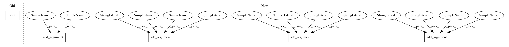

c89e20e360daeaa4f2a99c2ad0c579d503a07952,scripts/segmentation/train.py,,parse_args,#,21
Before Change
args.norm_layer = mx.gluon.contrib.nn.SyncBatchNorm if args.syncbn \
else mx.gluon.nn.BatchNorm
args.norm_kwargs = {"num_devices": args.ngpus} if args.syncbn else {}
print(args)
return args
class Trainer(object):
After Change
parser.add_argument("--no-wd", action="store_true",
help="whether to remove weight decay on bias, \
and beta/gamma for batchnorm layers.")
parser.add_argument("--mode", type=str, default=None,
help="whether to turn on model hybridization")
// cuda and distribute
parser.add_argument("--no-cuda", action="store_true", default=False,
help="disables CUDA training")
parser.add_argument("--ngpus", type=int,
default=len(mx.test_utils.list_gpus()),
help="number of GPUs (default: 4)")
parser.add_argument("--kvstore", type=str, default="device",
help="kvstore to use for trainer/module.")
parser.add_argument("--dtype", type=str, default="float32",
help="data type for training. default is float32")
// checking point
parser.add_argument("--resume", type=str, default=None,
help="put the path to resuming file if needed")
parser.add_argument("--checkname", type=str, default="default",
help="set the checkpoint name")
parser.add_argument("--model-zoo", type=str, default=None,
help="evaluating on model zoo model")
parser.add_argument("--save-dir", type=str, default=None,
help="directory of saved models")
parser.add_argument("--log-interval", type=int, default=20,
help="Number of batches to wait before logging.")
parser.add_argument("--logging-file", type=str, default="train.log",
help="name of training log file")
// evaluation only
parser.add_argument("--eval", action="store_true", default=False,
help="evaluation only")
parser.add_argument("--no-val", action="store_true", default=False,
In pattern: SUPERPATTERN
Frequency: 3
Non-data size: 5
Instances
Project Name: dmlc/gluon-cv
Commit Name: c89e20e360daeaa4f2a99c2ad0c579d503a07952
Time: 2020-01-18
Author: haofeikuang@gmail.com
File Name: scripts/segmentation/train.py
Class Name:
Method Name: parse_args
Project Name: asyml/texar
Commit Name: 4a327c9e769bc99adc87c9464374523de89fec6c
Time: 2018-08-08
Author: shore@pku.edu.cn
File Name: examples/transformer/hyperparams.py
Class Name:
Method Name: load_hyperparams
Project Name: dmlc/gluon-cv
Commit Name: c89e20e360daeaa4f2a99c2ad0c579d503a07952
Time: 2020-01-18
Author: haofeikuang@gmail.com
File Name: scripts/segmentation/train.py
Class Name:
Method Name: parse_args
Project Name: asyml/texar
Commit Name: 36ce15cd6b8d07cb87e4e416b304d052c343adb5
Time: 2018-06-24
Author: shore@pku.edu.cn
File Name: examples/transformer/hyperparams.py
Class Name:
Method Name: load_hyperparams